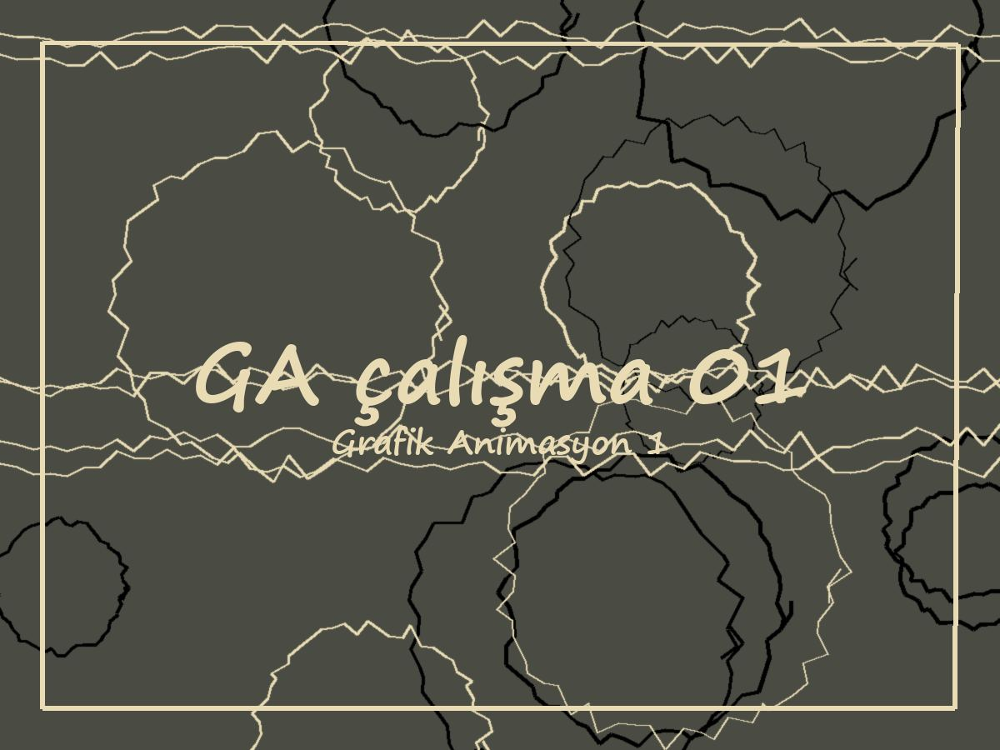
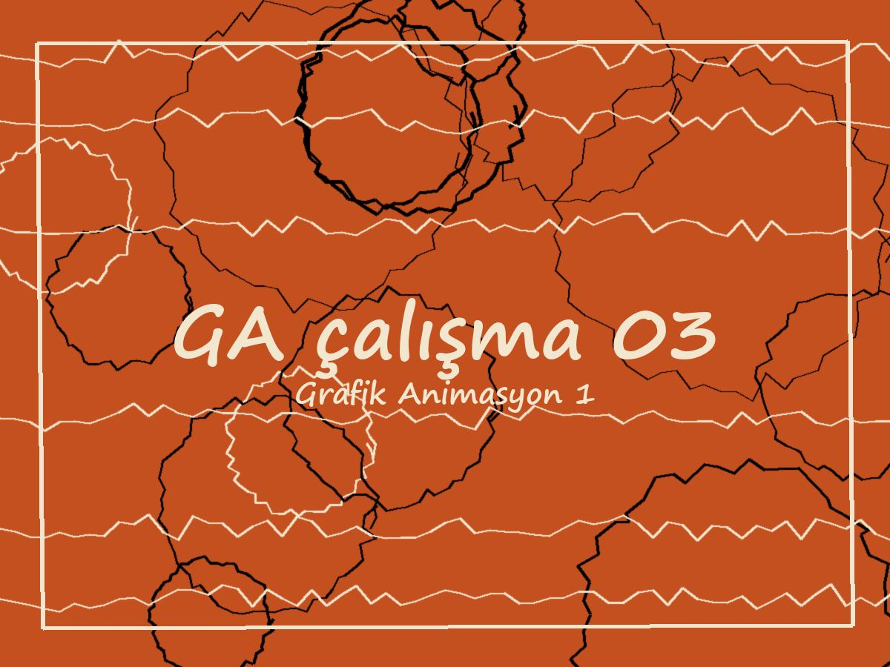
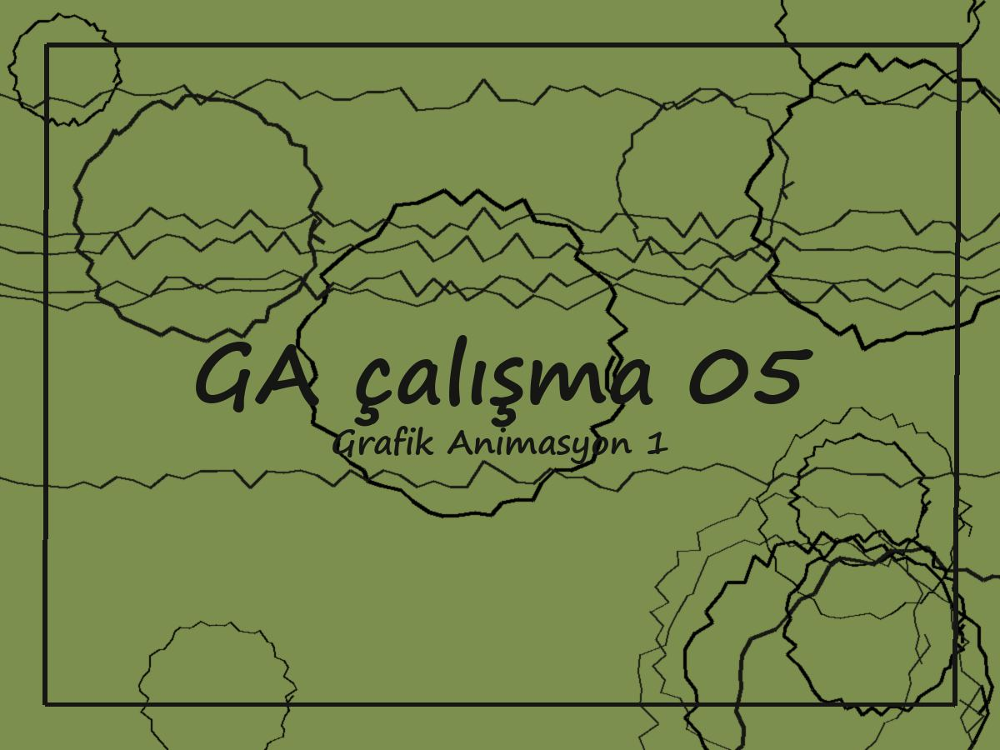
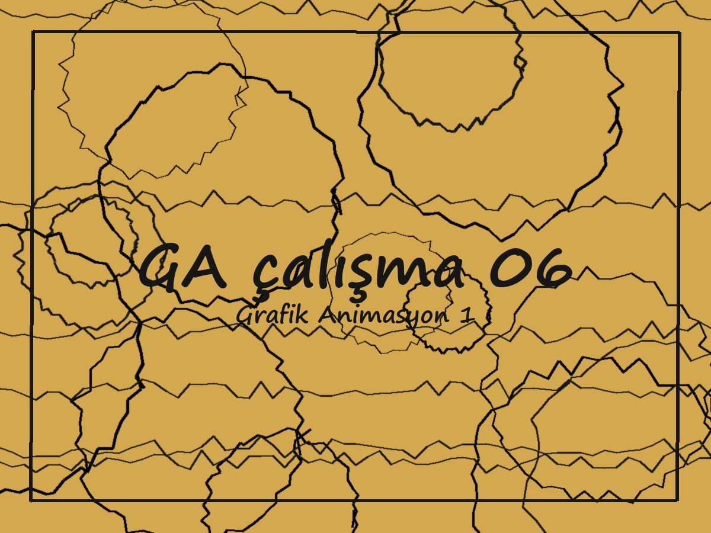
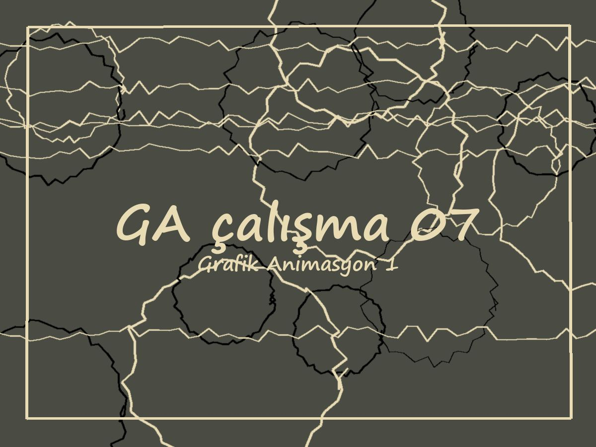
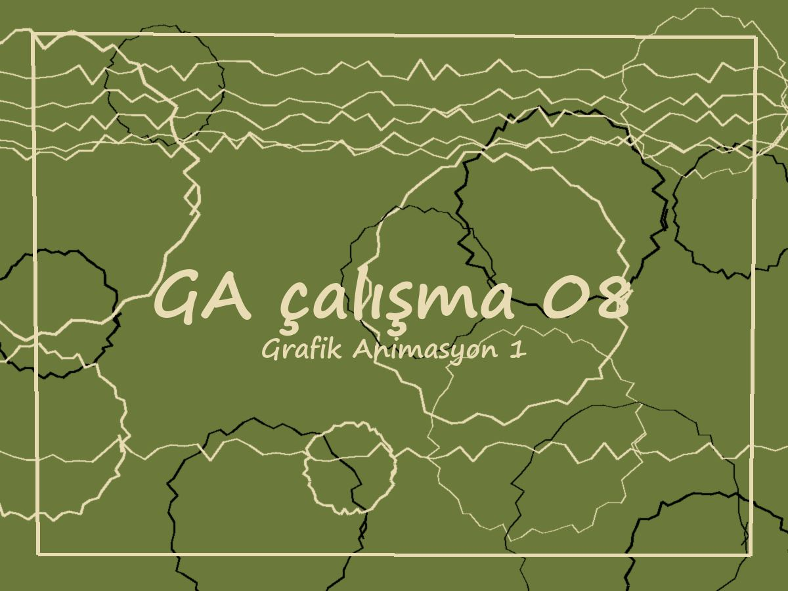

Ağırlığı olan bir top: ezilip esneyerek zıplıyor, her sekişte biraz daha yoruluyor.
Adobe Animate
(kare kare çizildi)
Grafik Animasyon 1 dersinde hazırladığım sekiz çalışma: zıplayan bir toptan kinetik tipografiye, yürüyüş döngüsünden paralaks bir ormana. Hepsini önce defterime çizdim, sonra Adobe Animate, After Effects ve Illustrator'da canlandırdım.
sekme seç, karta tıkla
Her kart bir ödev: görsel, kısa açıklama, kullandığım araç ve süre. Karta tıklayınca hikâyesinin tamamı açılıyor.
8 çalışma gösteriliyor

Ağırlığı olan bir top: ezilip esneyerek zıplıyor, her sekişte biraz daha yoruluyor.
Adobe Animate

Sevdiğim bir şarkı sözünün kelimeleri ritme göre zıplıyor, dönüyor, ekrandan kaçıyor.
After Effects

Kendi monogramım: çizgiler kendini çiziyor, harfler yerine oturup hafifçe yaylanıyor.
After Effects + Illustrator

Basit bir karakterin kusursuz dönen bir saniyelik yürüyüşü: temas, çöküş, geçiş, yükseliş.
Adobe Animate

Katman katman çizilmiş bir orman; kamera içinden süzülürken önü hızlı, arkası yavaş kayıyor.
After Effects + Illustrator

Oynat → duraklat, menü → çarpı: arayüz ikonları birbirine akışkan biçimde dönüşüyor.
Adobe Animate

Masasındaki kalemi kaybolan bir öğrencinin 18 panellik hikâyesi ve kaba animatiği.
Illustrator + Animate

Bir kampüs konseri afişi: yazılar ve şekiller sekiz saniyelik bir döngüde nefes alıyor.
After Effects + Illustrator
Zıplayan Top ödevinin 16 karesini bir flipbook'a çizdim. Kaydırdıkça sayfalar çevriliyor ve top canlanıyor. Pas renkli hayaletler önceki kareler, haki olanlar sonrakiler: Animate'teki onion skin tam olarak bu.
Kaydır: dört sahne, defter sayfaları gibi üst üste yığılsın.
sahne 1 / 4 Karakter
Karakter animasyonunun alfabesi. Önce dört ana pozu (temas, çöküş, geçiş, yükseliş) çizdim, ara kareleri onion skin açıkken tamamladım. Kollar ve şapka gövdeden birkaç kare geç hareket ediyor (follow-through), böylece yürüyüş robot gibi durmuyor. Son kare ilk kareye kusursuz bağlanıyor: 24 kare, sonsuz döngü.
Adobe Animate · 1 sn döngü · 24 fps
sahne 2 / 4 Tipografi
Bir şarkının ilk 15 saniyesini sesin dalga formuna bakarak kare kare işaretledim; her vurguya bir kelime hareketi denk geliyor. After Effects'te text animator ile harf harf ölçek ve dönüş verdim, graph editor'da eğrileri sertleştirip kelimelere çarpma hissi kattım. Geçişlerde maske kullandım: kelimeler birbirinin içinden çıkıyor.
After Effects · 15 sn · 30 fps
sahne 3 / 4 Sahne
Ormanı Illustrator'da yedi ayrı katman olarak çizdim: gökyüzü, uzak dağlar, iki sıra ağaç, sis, çalılar ve en önde yapraklar. After Effects'te katmanları 3D yapıp z ekseninde aralıkladım; kamera ilerledikçe yakın katmanlar hızlı, uzaktakiler yavaş geçiyor. Sis katmanına hafif bir opaklık dalgası verip derinliği artırdım.
After Effects + Illustrator · 10 sn · 24 fps
sahne 4 / 4 Hareketli Grafik
Statik bir afişi Illustrator'da tasarlayıp After Effects'te canlandırdım. Hoparlör şekilleri ritimle titreşiyor, başlık bir maskenin içinden kayarak beliriyor, arka plandaki çizgiler sonsuz döngüde akıyor. Katman ebeveynliği (parenting) ile küçük parçaları ana şekillere bağladım; döngünün ilk ve son karesi birebir aynı, dikiş yeri görünmüyor.
After Effects + Illustrator · 8 sn döngü · 24 fps
Kafamdaki sıradaki animasyon fikirleri. Notları tut, sürükle, fırlat; masadan düşmezler, söz.
Animasyonun yanında Bilgisayar Mühendisliği'nin diğer yarısı: derste ve gece yarısı yazdığım küçük web projeleri.
Görev ekle, tamamla, sil; her şey localStorage'da kalır.
HTML · CSS · JavaScript
Şehri yaz; anlık hava ve beş günlük tahmin Fetch API ile gelsin.
JavaScript · Fetch API · JSON
Menü, galeri ve rezervasyon formu; mobil öncelikli.
HTML · CSS Grid · Flexbox
Kâğıt eskizden Figma'da tıklanabilir prototipe.
Figma · UI/UX
Filtre, arama ve sayfa yenilense de duran bir sepet.
JavaScript · localStorage
Saf HTML, CSS ve JavaScript ile çizilmiş bir eskiz defteri portföyü.
HTML · CSS · GSAP
Bir animasyon fikrin, ekip arkadaşı arayışın ya da sadece "bunu nasıl yaptın?" diye bir sorun mu var? Kalemim hazır.